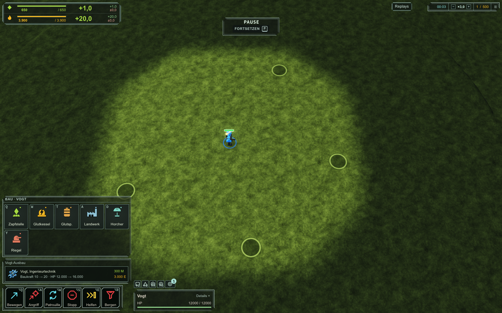
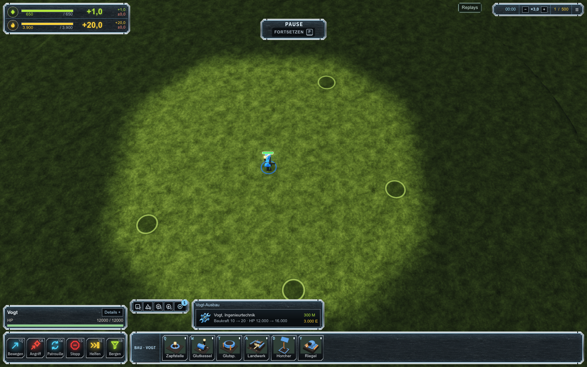

Same battlefield, commander selection and 1440 × 900 viewport. The reference direction places the selection summary above the left command controls and extends the build strip horizontally to the right. Frames use graphite steel surfaces, chrome bevels and blue-white inner rims. No minimap or selected-unit portraits.


Build tiles depict the actual in-game models. Frame geometry and controls are live CSS and Preact, with a subtle ImageGen metal material. Asset provenance and ImageGen prompt.